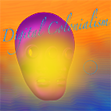
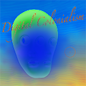
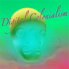
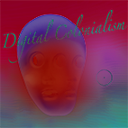

Techno-Dream
Digital Colonialism

A cat singing song

The after that never comes

The Signal and the Silence
10/12/2024

Chapter 4
A New Awakening
►
Your browser does not support the audio element.
Title
Text